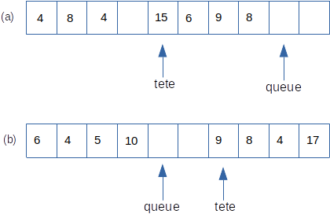

Exercice: implémenter une file bornée avec un tableau¶
On propose ici une autre réalisation possible d’une file bornée à partir d’un tableau. La file sera repérée par deux index tete et queue. On enfile par la queue et défile par la tête.
Soit \(N\) la taille de la file. On prévoit un tableau de taille \(N+3\) car on souhaite stocker également:
la position de la tête (index 0);
la position de la queue (index 1);
la longueur effective de la file (index 3)
La position de la queue indique l’endroit où sera enfilée la prochaine donnée. La figure (a) ci-dessous montre une file f de taille maximale 7, dans laquelle figure 4 éléments. Après les opérations:
defiler(f)
defiler(f)
enfiler(f, 4)
enfiler(f, 17)
enfiler(f, 10)
on se trouve dans la situation (b).

N = 5
def creer_file(taille=N):
#création d'un tableau ayant 3 cases supplémentaires par rapport à la taille de la file
f = [None] * (taille + 3)
#index 0: position de la tête, initialisée à 3
#index 1: position de la queue, initialisée à 3
#index 2: longueur courante de la file, initialisée à 0
f[0], f[1], f[2] = 3, 3, 0
return f
def enfiler(f, val):
long = f[2]
assert long != len(f) - 3, "Erreur: file pleine"
pos_queue = f[1]
f[pos_queue] = val
#réajustement de la queue
if pos_queue == N + 2:
f[1] = 3
else:
f[1] = f[1] + 1
#réajustement de la longueur de la file
f[2] = long + 1
def defiler(f):
assert not est_filevide(f), "Erreur: file vide"
pos_tete = f[0]
long = f[2]
val = f[pos_tete]
#réajustement de l'index de la tête
if pos_tete == N + 2:
f[0] = 3
else:
f[0] = f[0] + 1
#réajustement de la longueur de la file
f[2] = long - 1
return val
def est_filevide(f):
return f[2] == 0
A partir des informations disponibles:
dire combien d’opérations sont autorisées sur cette structure;
rédiger leur spécification.
Prévoir les réponses de l’interpréteur python après les séquences de commandes suivantes (qui se suivent!):
Séquence 1
f = creer_file()
est_filevide(f)
Séquence 2
enfiler(f, 5)
est_filevide(f)
Séquence 3
enfiler(f, -10)
enfiler(f, 25)
enfiler(f, -35)
while not est_filevide(f):
print(defiler(f), end=' ')
Séquence 4
f2 = creer_file(3)
enfiler(f2, 10)
enfiler(f2, 100)
enfiler(f2, 1000)
enfiler(f2, 50)
(+++) Quels pourraient être les avantages / inconvénients de cettte implémentation d’une file comparée à celle utilisant une liste de python du cours ?